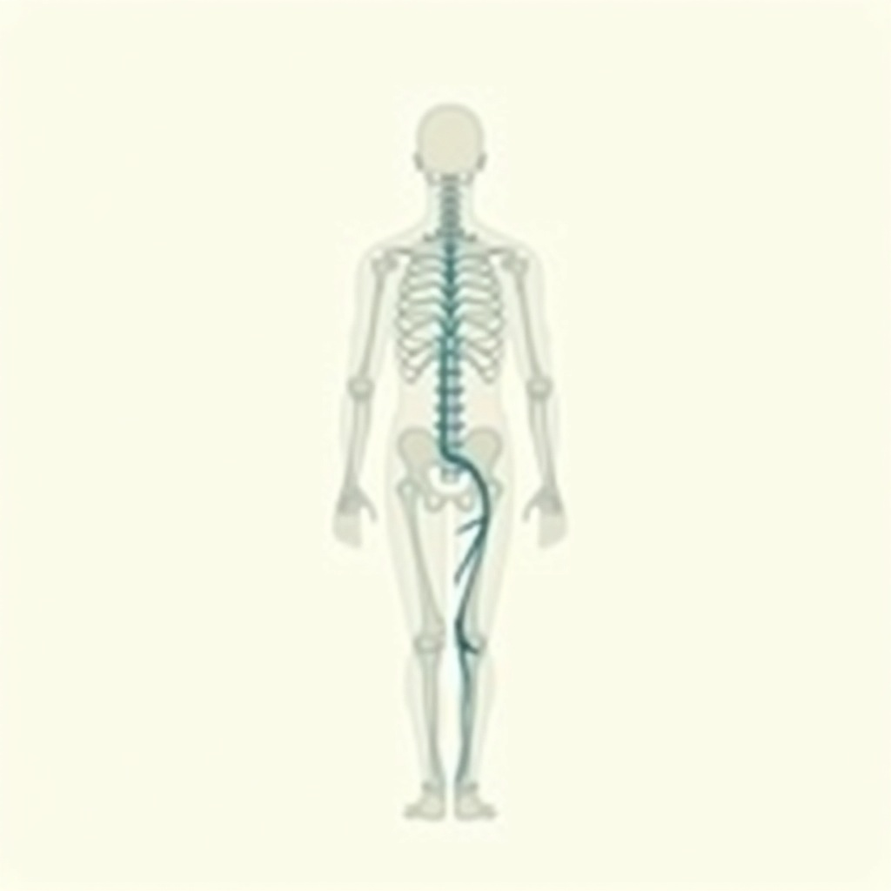
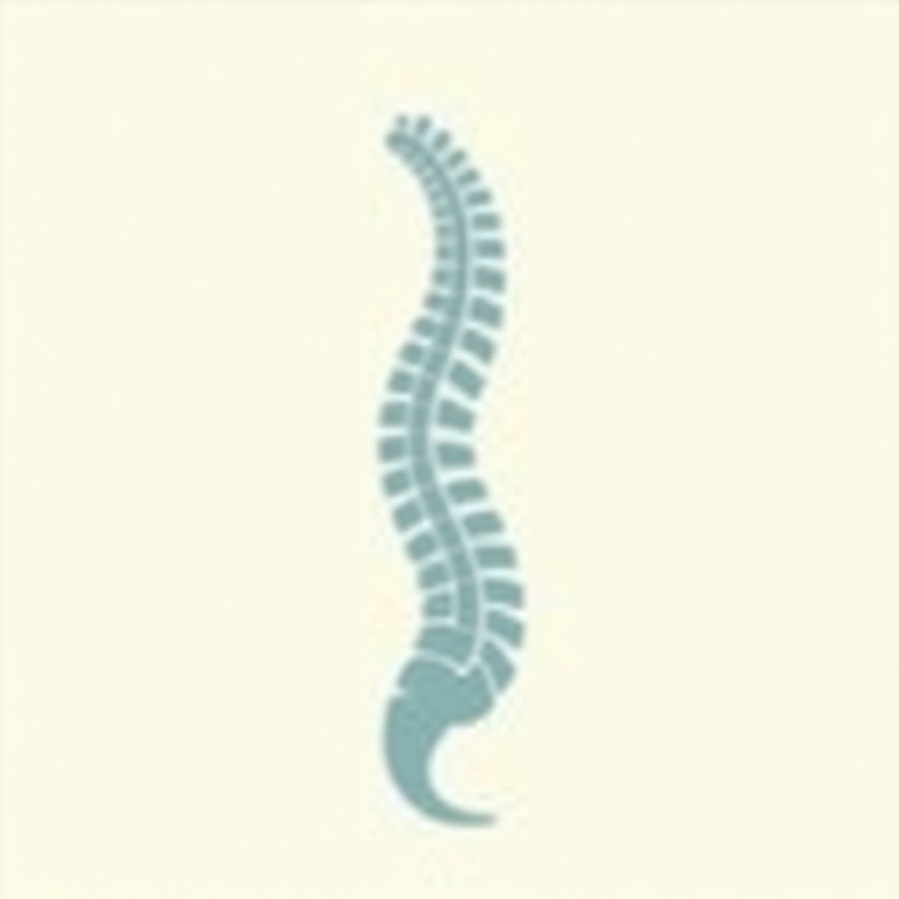

Applied kinesiology assessment
Muscle testing read alongside your history, a physical exam and any imaging you bring. The step everything else follows from.
Suffering from pain and nothing seems to work?
This is the Roseville practice that combines an applied-kinesiology assessment with an FDA-cleared device stack, for pain that has not responded to anything else. The examination establishes what is actually driving the problem. The equipment is what it gets treated with. One licensed practitioner does both, in one office on North Sunrise Avenue.
Checkable, not claimed
No star rating and no review count appear anywhere on this site.
The difference, stated plainly
There are two kinds of practice within a few miles of here, and half an hour on their websites will tell you which is which.
One kind owns the instruments. Laser, decompression tables, red light, a page for each. Read those sites end to end and the method is never mentioned, because it is not what they do. The other kind owns the method. The practitioner in this region with the deepest credentials in it is one of them, twelve miles out, and his site lists no laser, no PEMF and no device of any kind. Within three miles of this address nobody publishes that capability at all.
Sacramento Applied Kinesiology runs both halves under one licensed practitioner. That is a statement about what is in the building rather than a claim to be better than anyone, and you can verify either half of it on the competing websites yourself.
It matters for a plain reason. A clinic with instruments and no examination has to guess which instrument to reach for. A method with no instruments can only point at the problem.
Recognise any of this?
Adults in Roseville and along the Sacramento corridor, with pain that has lasted long enough to stop being a nuisance and start being a fact of life. A low back. A neck. A shoulder that will not go overhead. A sciatic line down one leg. A heel that is worst in the first few steps of the morning.
Standard medical care is doing its job at every stage of the route beside this one, and where a scan, a prescription, a specialist or surgery is what you need, that is what you should have, and you will be told so here rather than kept.
What the standard route is not set up to do is spend a whole appointment on the question of why this part of you is the part that keeps failing. It treats the site of the pain and refers onward, which for most problems is exactly right. The missing question is the one everything here is built on, and it is worth asking before you agree to anything irreversible.
Almost everyone here arrives with a history that reads like this one.

Twenty conditions, twenty pages
Every condition below has a page of its own, written to say what is looked for in that particular problem rather than to repeat a textbook description you can find anywhere.
Back, neck and nerve
Head and whole body
Limbs and joints
Injury

The stack, not a menu
Which of these you get is decided by what the assessment finds, not by a package picked in advance. There is no menu to order from on this site, and that is deliberate.
Muscle testing read alongside your history, a physical exam and any imaging you bring. The step everything else follows from.
A non-thermal low-level laser at 640 nm, FDA-cleared under K190572 and K180197. No drugs, no needles, no downtime.
The wider low-level laser category, kept distinct here from the FX-635 rather than blurred into it.
Pulsed electromagnetic fields, used to support recovery. No other practice in the captured local set publishes this capability.
Clinical nutrition from a board-certified clinical nutritionist, for the part of a problem that has to be worked on from the inside.
Support for fatigue, sleep and recovery on the non-prescription side, run in step with whoever prescribes for you.
The licensed work underneath everything else, pointed by the examination instead of repeated on schedule.
FDA clearance means a device is cleared for a stated use. It is not proof of a result, and it is not described as one here. The full treatment stack.
A second opinion on a case that has stalled
It starts with your history, including every practitioner you have already seen and what each one changed. Bring imaging, reports and a prescription list. The things that did not hold are as informative as the things that did.
A physical examination, then manual muscle testing across the body. You hold a limb in a set position, gentle pressure is applied, and the response is noted. Read together with everything above, the pattern narrows where to look. It is not imaging, and by itself it is not a diagnosis.
What that turns up decides which treatments apply to you, and most plans use more than one. The same tests that set your baseline are repeated as you go, so the plan answers to measured change rather than to a schedule fixed on day one. If it is not moving, you will hear that rather than be booked further into it.
The boundary is set by the profession's own governing body and this practice states it openly. Applied kinesiology procedures are not intended to be used as a single method of diagnosis, and applied kinesiology examination should enhance standard diagnosis, not replace it.
The trust ladder, second rung
In his own words:
"I believe the body can heal itself when the right obstacles are removed."
That sentence is the operating theory of everything here, and it explains the order things happen in. Find the obstacle first, then treat it. He came to this method as a patient rather than as a student, after an injury that conventional care and standard chiropractic both left unfinished, and he has practised it since 1994.
Dr. Brian Van Wagenen is a Doctor of Chiropractic, California licence DC-30427, and a board-certified clinical nutritionist. His training covers applied kinesiology, Diversified, Sacro-Occipital, Neuro-Emotional, Nutritional Response Testing, Total Body Modification, Activator and Percussion technique.
This is a single-practitioner practice, which is the part that is hard to copy. The person who assesses you at the first visit is the person you see at the tenth.
That is a list of training, not a list of certifications. Applied kinesiology is a method used here rather than a credential held here. No board certification or diplomate status in it is claimed.
Every entry above is one you can check yourself. Credentials and licence.
Against the status quo
An adjustment is a real treatment and it helps a great many people.
The limit is structural rather than a failure of anyone's skill. If every visit repeats the same correction regardless of what is driving the problem, then a problem driven by something else keeps returning, and you keep returning with it. That is the pattern most people describe on the way in here.
What this offers is not a better adjustment. It is the step that decides what to correct, before anything is corrected at all.
The trust ladder, third rung
Six real patient testimonials sit on the current website. They did not come across in the handoff, so the two below are clearly-marked representative examples written to hold their place, and they will be swapped for the real ones before launch. Neither is a verified outcome and neither is a real named patient.
"Three practitioners had treated my back. This was the first appointment that went at why my back was the part taking the strain."
"What I remember is being told plainly which parts of this were likely to change and which were not. That had not happened anywhere else."
Testimonials presented apply only to the individuals depicted, cannot be guaranteed, and should not be considered typical. Read the testimonials page.
Conversion here is education, not a price
You will not find a price, a fee or an introductory offer anywhere on this site, because what a plan involves depends entirely on what turns up on the day. That gets settled in conversation, not on a web page. Because care here is paid for directly, federal law gives you the right to a written Good Faith Estimate before anything begins, and that right is honoured.
Book a first visit, or call and describe the problem first. Appointments are made directly with the office at 568 N Sunrise Ave, Ste 200, Roseville.
Ready when you are
Appointments are booked directly with the clinic. If it is easier to talk it through first, call and ask.